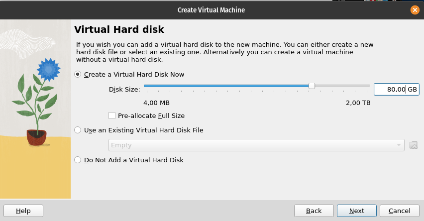

2023 11 13 virtualbox
VPN software is often a major inconvenience, either blocking Internet access or severely limiting the speed at which you can connect.
This makes attending meetings and troubleshooting problems with limited Internet access a challenge. Installing and using VPN software on Linux is also generally quite complicated, as I've outlined in my guide The Battle Between Pop!_OS & VPN Software.
A simple solution to these challenges is to run the VPN software inside a virtual machine. This approach ensures that your primary machine remains unaffected by the VPN's limitations. Given the user-friendly nature of most VPN software on Windows, I've chosen to use Windows 10 as my guest Virtual Machine.
Another benefit of using a Windows Virtual Machine is the ease with which you can install and run Windows exclusive software, such as Visual Studio, SQL Server Management Studio and Adobe PDF Viewer to name a few. Secondly, if your Windows-only application works perfectly in a VM, you don't have to dual-boot every time you want to use it.
For this guide, we are going to be using VirtualBox, which is free for private and commercial use.
Introduction¶
Skill level required: Intermediate
Before we can start using VirtualBox, we need to install it. As with most installations on Linux, we will open the Terminal and run the following to install VirtualBox.
Installing VirtualBox¶
sudo apt update
sudo apt install virtualbox virtualbox-guest-additions-isoInstalling Windows 10 in VirtualBox¶
Download the official Windows 10 ISO from Microsoft https://www.microsoft.com/en-gb/software-download/windows10ISO
Add a new virtual machine to VirtualBox. Machine >> New
Name your virtual machine, choose where you want to store its files, select the ISO you downloaded and tick Skip Unattended Installation.
Depending on the use case for the virtual machine, I choose the memory and processors accordingly. For the VPN virtual machine, 4GB RAM and 2 processors are sufficient. If I'm creating a development machine, I'll go for 8-16GB RAM and 4 processors.
I usually go with about 80–100GB for Disk Size

Now the machine is created, but before booting I go to Settings >> Network. I change the Attached to drop down to a Bridged Adapter, and then I select the correct name. If you are connecting the VM to your Wi-Fi network, it will have something starting with wl (wireless lan) and if you are connecting the VM to ethernet, it will start with en.
I then uncheck Enable network adapter during installation. This allows me to install Windows 10 using a local user account, rather than linking it to my online Microsoft account. If Microsoft cannot detect that you are connected to a network during installation, it will allow this option.
The reason I switch to a bridged adapter is that you generally cannot use VPN software in a VM over NAT.
Now install Windows as usual
Once the Windows 10 installation is complete, and you've booted to the desktop. Enable the network again.
Installing VirtualBox Guest Additions¶
The VirtualBox Guest Additions give us a number of useful features:
- Screen resizing (via a virtual display driver)
- Shared clipboard between host and guest machine
- Shared Folders (file sharing between host and guest)
-
Seamless mode (allows application windows from the guest OS to run directly on the host desktop)
-
To install Virtualbox Guest Additions, select Devices >> Insert Guest Additions CD Image...
Next, navigate to the connected DVD drive and run the VBoxWindowsAdditions.exe application.

After the Guest Additions are installed, you'll be prompted to restart the virtual machine.
After the restart is complete, you will know that the Guest Additions have been installed correctly if your virtual machine resizes correctly.
Optional Steps¶
These are the typical tweaks I make on every new Windows 10 installation.
Debloat Windows¶
I like to use a 'Windows 10 Debloater', which removes all the stuff I don't use in the operating system, such as Candy Crush, Cortana and One-drive. Have a look at its README.md to see how to use it
https://github.com/Sycnex/Windows10Debloater/archive/refs/heads/master.zip
Disable Visual Effects¶
I usually turn off all visual effects as they just slow the machine down.
I usually leave Smooth edges of screen fonts alone, otherwise the text on the screen can be very difficult to read.
Replace the Start Menu with Open-Shell¶
I usually replace the Start Menu with Open-Shell as it loads much faster, and it's easy to configure https://github.com/Open-Shell/Open-Shell-Menu/releases
Disable Hibernation¶
Disable system hibernation as it takes up a lot of disk space. Go to the command prompt as an administrator and run the following:
powercfg /hibernate offShrink the Windows System partition¶
I find that Windows keeps trying to use more and more disk space. Even if you free up space, the VirtualBox vdi files continue to use the maximum space the operating system has grown to. To prevent this, I aggressively limit the maximum space that Windows can use for the C drive. I then expand the drive when more space is needed, if I cannot free additional space.
Disable background apps¶
I'm not sure why Windows thinks it's necessary to have applications like the calculator, 3D viewer and camera running in the background all the time. This is a waste of CPU cycles. I disable all the ones I don't need.
Troubleshooting¶
Shared folder missing after VM is restarted¶
Make sure that you select both Auto-mount and Make Permanent when adding a new Shared Folder.
Clipboard not working between VM and Host machine¶
Did you turn it on under Devices >> Shared Clipboard >> Bidirectional?
Clipboard randomly stops working¶
You can fix this by killing the c:\Windows\System32\VBoxTray.exe process and starting it again. I usually put a batch file on my Windows VM desktop as this happens alot for me. I call my batch file fix-clipboard.bat and I put it on my desktop with the content below.
:: Terminate the VirtualBox tray application
taskkill /F /IM VBoxTray.exe
:: Restart the VirtualBox tray application
START "VboxTray" "c:\Windows\System32\VBoxTray.exe"My VM has no internet access¶
If you are using a Bridged Adapter make sure that the Name selected is the name of the network that you are actually using. I.e. wl (wireless lan) if you are connecting via Wi-Fi and if you are connecting the VM to ethernet, it will start with en. Also make sure that Enable Network Adapter is ticked.
Conclusion¶
After successfully configuring your Virtual Machine (VM), you can proceed to install your preferred VPN software within the VM environment as well as any other tools that are exclusive to Windows.
In my personal experience, this approach works with the following VPN software:
- FortiClient VPN
- Cisco AnyConnect
- Secure Mobility Client
- Global Protect
- Azure VPN Client
- Citrix Workspace App
An additional advantage of adopting this method is that dual-booting your machine is not required.